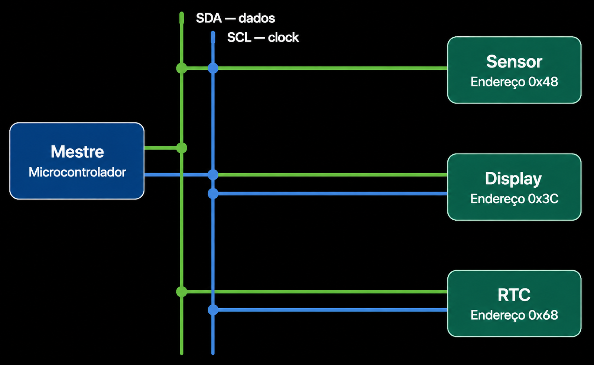
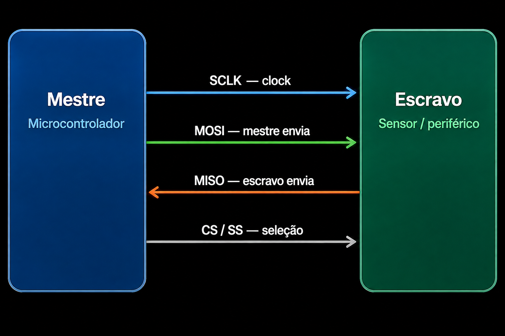
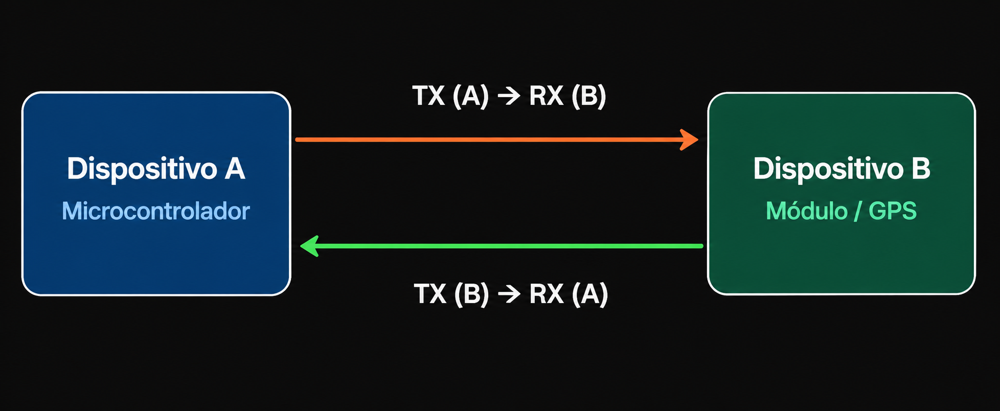
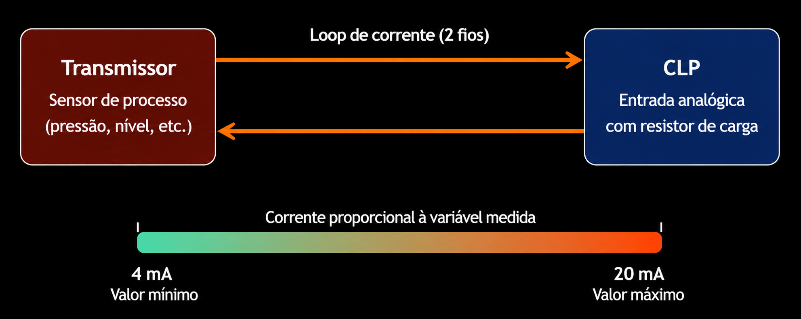
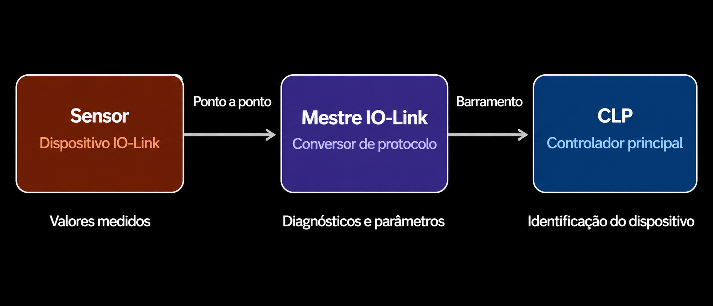

COMUNICAÇÃO COM SENSORES
Os sensores digitais modernos transmitem dados através de diversos protocolos de comunicação. Conhecer esses protocolos é essencial para integrar sensores a microcontroladores, CLPs e sistemas IoT, garantindo a correta interpretação dos sinais e a confiabilidade do sistema.
Cada protocolo possui características específicas de velocidade, distância, quantidade de dispositivos e complexidade de implementação, sendo escolhido de acordo com a aplicação e os requisitos do projeto.
I²C (Inter-Integrated Circuit)

Figura 1: Topologia I²C mostrando um mestre e múltiplos escravos via SDA/SCL
Protocolo serial que utiliza duas linhas: SDA (dados) e SCL (clock). Permite conectar vários dispositivos com endereços únicos no mesmo barramento.
Aplicações: Sensores, displays, memórias, RTCs, expansores de GPIO.
Exemplo: Raspberry Pi possui suporte a I²C em seus GPIOs.SPI (Serial Peripheral Interface)

Figura 2: Conexão SPI com as linhas MOSI, MISO, SCLK e seleção (CS)
Protocolo serial rápido com quatro sinais principais: MOSI (Master Out, Slave In), MISO (Master In, Slave Out), SCLK (clock) e CS/CE (seleção do dispositivo).
Uso: Comunicação rápida entre controlador e periféricos.
Raspberry Pi também oferece SPI via GPIOs.UART (Universal Asynchronous Receiver/Transmitter)

Figura 3: Comunicação serial UART cruzando linhas TX e RX
Comunicação serial assíncrona com duas linhas: TX (transmissão) e RX (recepção). Muito usada para conectar módulos, sensores, GPS, equipamentos industriais e microcontroladores.
Raspberry Pi e outros microcontroladores oferecem UART.Sinal 4–20 mA

Figura 4: Exemplo de laço de corrente 4-20 mA em ambiente industrial
Padrão industrial onde uma corrente representa a variável medida: 4 mA → valor mínimo, 20 mA → valor máximo. Muito utilizado em ambientes industriais para transmissão de sinais entre instrumentos e sistemas de controle.
IO-Link

Figura 5: Topologia IO-Link conectando sensores ao controlador principal
Tecnologia de comunicação para conectar sensores e atuadores a sistemas de controle na Indústria 4.0. Permite transmitir valores medidos, diagnósticos, parâmetros, identificação do dispositivo e informações de funcionamento.
COMPARAÇÃO DAS TECNOLOGIAS
Visão geral dos protocolos de comunicação